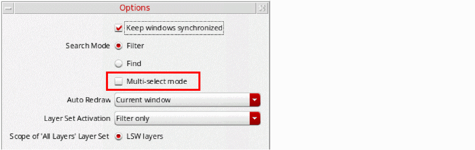
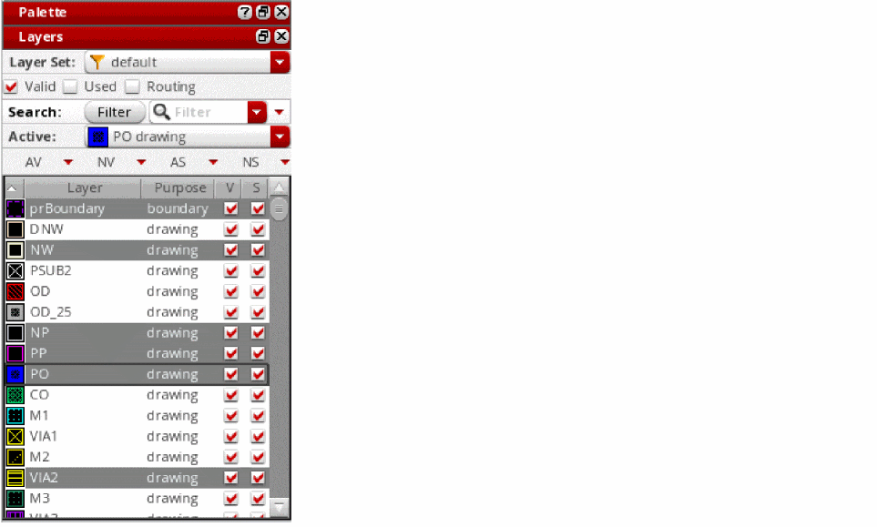
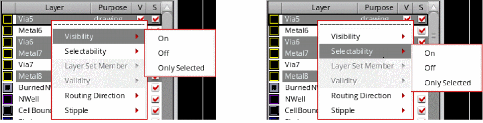

Setting Attributes for Multiple Layers in Multi-Selection Mode
In multi-selection mode, you can set attributes, such as visibility, selectability, layer set membership, validity, routing direction, and stipple, for multiple layers at the same time.
To set attributes for multiple layers at a time:
-
Choose Options from the Palette context menu.
The Options form appears. -
Select the Multi-select mode check box and click OK.
 -
Select the layers for which you want to set attributes, in the Layers panel.
To select multiple non-adjacent layers, select a layer, and then hold down theCtrlkey and click the other layers that you want to select. To select a set of adjacent layer-purpose pairs, click the first layer in the sequence, and then hold down theShiftkey and click the last layer in the sequence. To remove a layer from a multiple-layer selection, hold down theCtrlkey and click that layer.
 -
Right-click the selection and from the context menu use the Visibility, Selectability, Layer Set Member, Validity, Routing Direction, and Stipple options to set the corresponding attributes for the selected layers.
The Layer Set Member and Validity options are available only when the Member and Validity check boxes are selected on the Edit toolbar. The Routing Direction option is available only for routing layers.

Related Topics
Setting Layer Visibility and Selectability Depth in Single Selection Mode
Return to top